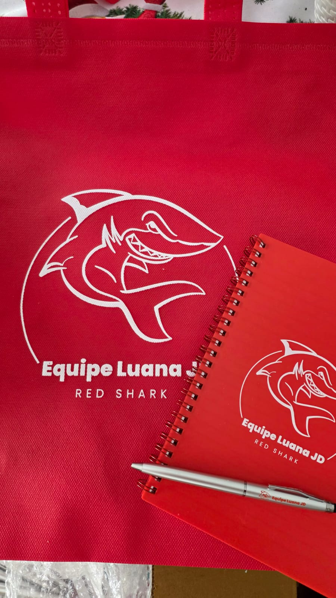
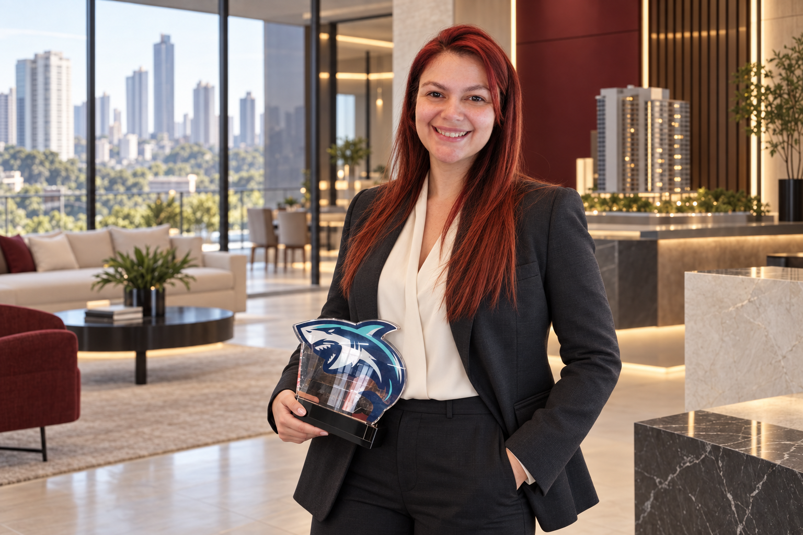
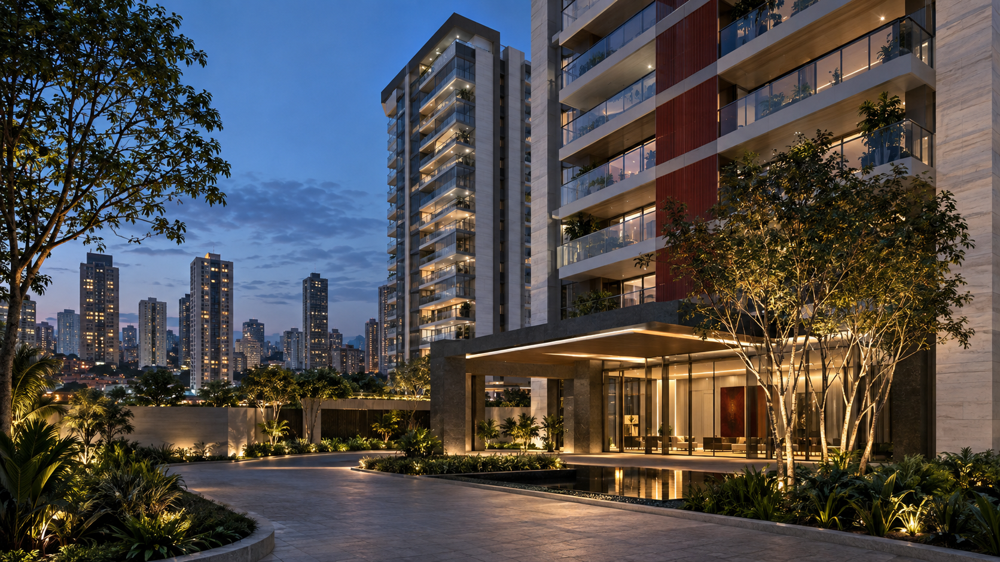
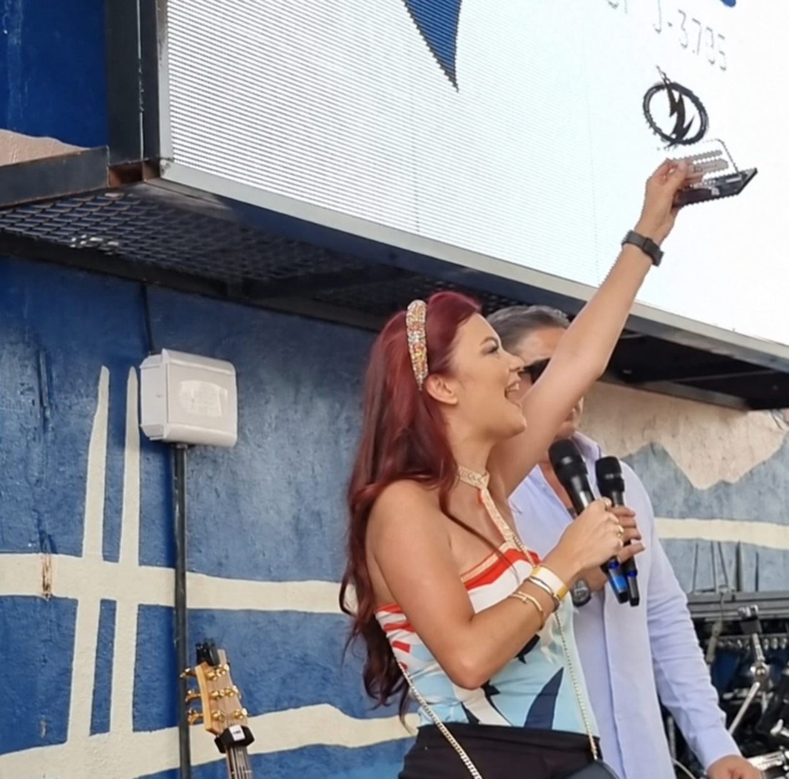
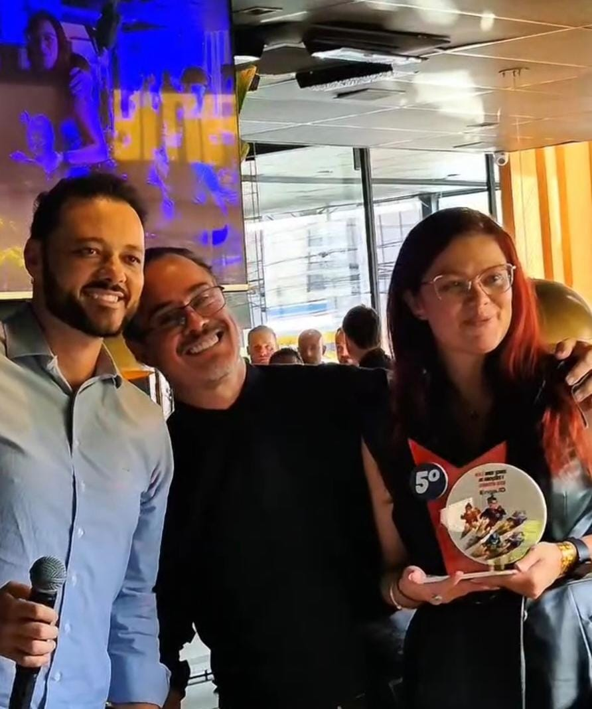
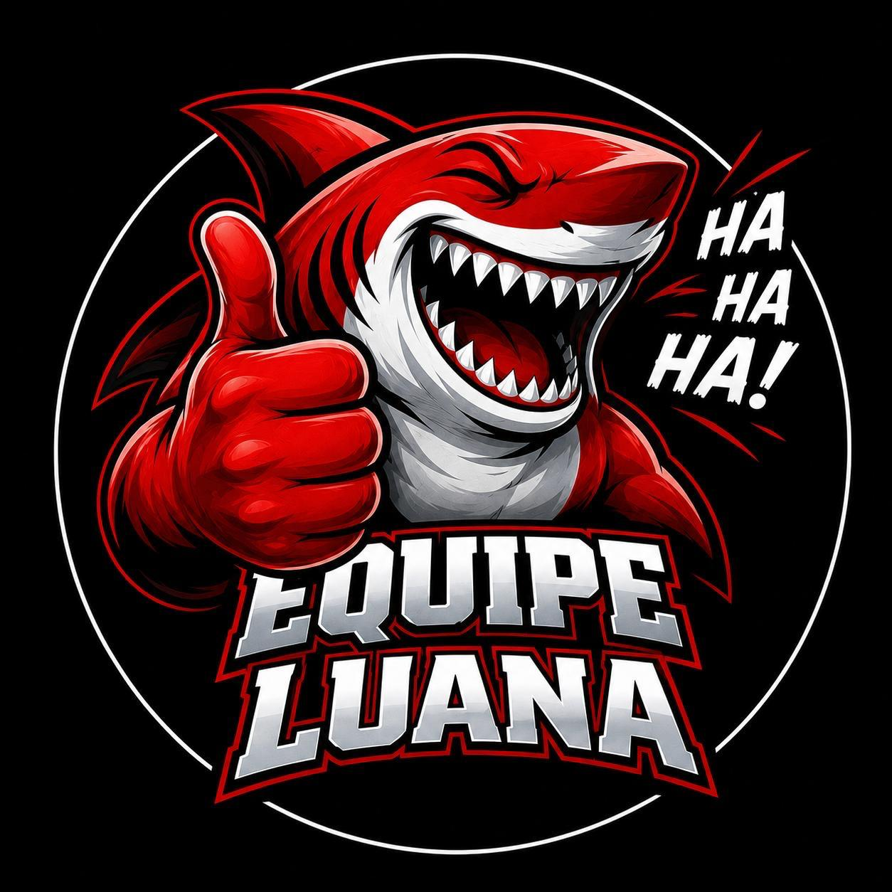

Identidade de equipe
Ambição, disciplina e apoio de verdade.
Luana Donatti · Liderança imobiliária
Mais de 700 imóveis vendidos e R$ 500 milhões em VGV. Uma trajetória construída na linha de frente, hoje dedicada a orientar compradores e desenvolver corretores de alta performance.


Imagem conceitual
Trajetória
Luana começou na corretagem de lançamentos em 2012. Passou por grandes empresas, comercializou empreendimentos em diferentes bairros de São Paulo e, em 2020, assumiu a gerência. Desde então, sua equipe se mantém entre as cinco melhores da empresa.
Início na corretagem, com foco em lançamentos imobiliários.
Assume o desafio de liderar, desenvolver e acompanhar corretores.
Conecta compradores, parceiros e equipe a oportunidades com condução humanizada.
Resultados com contexto
Uma sequência de resultados que traduz constância, método comercial e desenvolvimento de pessoas.
Luana Donatti no JD Cast · EP20
Em sua participação no JD Cast, Luana leva para a conversa a experiência de quem vive a liderança comercial na prática: pessoas, desenvolvimento, acompanhamento e resultado.
14 anos de mercado dão contexto a uma conversa sobre desenvolvimento profissional, acompanhamento e performance.
Book Luana Donatti
Premiações, equipe, bastidores e conquistas que aproximam você da profissional por trás dos resultados.
Seleção de empreendimentos
Lançamentos, projetos em construção e diferentes tipologias da Diálogo, selecionados para iniciar uma conversa objetiva sobre perfil, momento e região.
Ver os 10 empreendimentos →Informações comerciais e disponibilidade devem ser confirmadas no atendimento com a Luana JD.
Equipe Luana JD · Red Shark
A liderança da Luana combina treinamento, acompanhamento e leitura individual do potencial de cada corretor. O objetivo não é apenas cobrar resultado, mas construir profissionais capazes de conduzir negociações de excelência.

Ambição, disciplina e apoio de verdade.

Resultado construído em conjunto.

Presença forte e mentalidade competitiva.
Dois caminhos. A mesma condução profissional.
Fale sobre o imóvel que procura ou apresente seu perfil para integrar a equipe e construir novas parcerias.